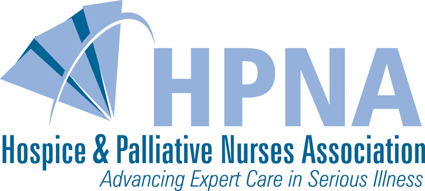

Our care managers bring decades of combined experience as registered nurses, social workers, and certified dementia practitioners, united by a commitment to families navigating aging with dignity.
Our care management team brings together more than 250 years of combined experience: registered nurses, social workers, certified care managers, and certified dementia practitioners. We come from oncology, ICU, hospice, public health, geriatric medicine, social work, and elder law backgrounds.
Click any team member to read their full bio.
Angela is a master's trained nurse with over 40 years of experience. In 2006 she founded Caring with Grace in Dallas to share her passion, knowledge, and experience helping seniors, adults with disabilities, and their families navigate the challenges of aging.
Tina Lott brings more than 30 years of diverse professional experience spanning health care, public relations, nonprofit leadership, education, care management, and strategic program development. With a strong foundation in communications and organizational development, Tina has dedicated her career to improving the quality of care and support for older adults, individuals with physical and mental health challenges, and their families.
As the youngest member of a large family, Tina also brings deep personal experience to her work. She has helped parents, siblings, and extended family members navigate the often-complex health care system, including Medicare and Medicaid, health and long-term care insurance benefits, housing options, and the financial realities of care decisions.
As Director of Care Management, Tina continues her commitment to excellence in Aging Life Care™ while mentoring the Caring with Grace team across a wide range of complex cases. She supports older adults, adults with disabilities, and their families in finding clarity and confidence as they move through the health care system.
Previously, Tina served four years as Executive Director of the Alzheimer's Association and successfully owned and operated her own care management company for 14 years. She was also among the early educators and advocates of the person-centered care model in long-term care settings, helping advance more compassionate, individualized approaches to care.
In addition, Tina developed both a "Care at Home" program and a "Home Technology" program for a large hospital system, expanding opportunities for safe, effective aging in place.
Tina has been a member of the Aging Life Care Association® for over 11 years and actively volunteers with its South Central Chapter. She earned her Care Management Certification more than a decade ago and is a longtime member of the Dallas Area Gerontological Society. Tina also donates her time to numerous community organizations and her church, all dedicated to supporting vulnerable and underserved populations.
Beth earned a Master's Degree in Social Work from the University of Arkansas at Little Rock and a Bachelor of Arts in Social Work from Baylor University. She has practiced in both the medical and non-profit arenas, with extensive expertise in oncology and chronic illness. As a care manager, Beth serves as an advocate to our clients in today's confusing and complex medical infrastructure. She is experienced in psychosocial assessments, crisis intervention and planning for continuity of care. Beth brings first-hand professional and personal experience to the Caring with Grace team and is committed to helping our clients achieve the highest quality of life and level of independence for as long as possible. She holds a care management certification through NACCM, is an advanced professional member of the Aging Life Care Association® and the Dallas Area Gerontological Society.
Kristina is a registered nurse with over 30 years of experience in the clinical setting. She received her BSN from Columbia University School of Nursing in New York City. She has worked primarily in acute hospital areas including the ICU, ER, and CCU. Kristina also gained experience working for physicians, private clinics, as well as private duty nursing care. Most recently she has been part of a geriatrics unit in a local medical center. Kristina's nursing skills align beautifully with our clients' needs. She is a professional member of the Aging Life Care Association® and a member of the Dallas Area Gerontological Society.
Amy is a BSN trained nurse with 20 years of experience. She received her nursing degree from Baylor University School of Nursing. She has worked in a variety of settings including hospital ICU, ER, hospice and Director of Nursing for skilled rehab & long term care. Her nursing case management experience comes from working for a non-profit organization where she managed the private care department with a staff of up to 60 employees. She brings both professional and personal experience to the Caring with Grace team and is committed to helping our clients achieve the optimal quality of life and maintain independence as long as possible. Amy is a professional member of the Aging Life Care Association® and a member of the Dallas Area Gerontological Society.
Jennifer earned a BA in nursing from the College of St. Scholastica in Duluth, Minnesota. Upon graduation, she was commissioned into the United States Air Force and served 10 years as an Air Force Nurse. She worked in multiple clinical settings in Texas, Germany and Idaho. Jennifer served as the charge nurse of a large multidisciplinary outpatient clinic, managing over 6,000 patients a month. After leaving the Air Force, she worked as the embassy nurse at US Embassy Brazil. Jennifer is a detailed person and is passionate about nutrition and wellness. She volunteers her time at the Tarrant County Medical Reserve Corps. Jennifer is a Certified Dementia Practitioner, a member of the Aging Life Care Association® and Tarrant Area Gerontological Society.
Kristen has been an RN for nearly 20 years graduating from University of the Incarnate Word in San Antonio, TX. The first 4 years of her career were spent working in hospitals, including Methodist Hospital in San Antonio and NYU Medical Center in New York City, on post-surgical units and inpatient physical rehabilitation. Due to the strong bond she had with both her grandmothers and their experience with hospice and long term care, Kristen felt called into geriatric nursing. She has held Director of Nursing positions at Skilled Nursing Facilities for over 7 years as well as certifications in Assisted Living and Legal Nurse Consulting. She continues to consult on legal cases and in long term/home care compliance. Kristen is an active member of St. Rita Catholic Community volunteering to bring communion to the sick and homebound and educating the parish on various topics including dementia and end of life issues. Kristen feels truly honored to be a nurse care manager and respectfully serve the older adults in her community. Kristen is a Certified Dementia Practitioner, a professional member of the Aging Life Care Association® and the Dallas Area Gerontological Society.
Jennifer Eakins has more than 20 years of experience in the healthcare industry, which included working directly with Kenneth H. Cooper M.D., the father of "aerobics" and founder of the renowned Cooper Aerobics Center in Dallas, Texas. This experience allowed Jennifer to use her passion for helping others. She advocated for patient's health and wellness by assisting them with preventive and primary care medicine, supervised exercise physiologists, and communicated with physicians and other professionals involved in patient care. Jennifer has brought those skills to her career as an Aging Life Care Manager® dedicated to advocating, teaching, and supporting her clients and their families as they navigate the journey of aging well. Along with her Bachelor of Arts in Exercise Physiology from the University of Texas at Arlington, she is a Certified Dementia Practitioner, an associate member of the Aging Life Care Association® and a Dallas Area Gerontological Society member.
Marcie earned her Bachelor of Science in Human Development and Family Studies from Texas Tech University followed by her nursing degree through Methodist Hospital School of Nursing. As an RN, Marcie has both professional and personal experience that make her a valuable asset to our team as well as her Caring with Grace clients. Her dedication to nursing was deeply influenced by her personal experience of caring for her grandfather after a life-altering accident which instilled in her a passion for improving the lives of others. Professionally, she brings years as a critical care nurse in both CCU and ICU settings, home health care and school nursing. Marcie is a Certified Dementia Practitioner as well as an affiliate partner of the Aging Life Care Association®.
Stephanie earned a Masters degree in Speech-Language Pathology and Audiology along with a Bachelors degree in Communication Arts and Sciences from Baylor University. She has over 25 years of experience treating all ages from young children to the aging. Stephanie has worked the majority of her career in long term care facilities in East Texas and most recently served as the Director of Rehabilitation at Buckner Baptist Village. Advocating for the elderly is Stephanie's passion and she puts her whole heart into her work supporting her client's needs as part of the Caring with Grace team. Stephanie is an affiliate partner of the Aging Life Care Association® and a Certified Dementia Practitioner.
Andrea earned her Master's Degree in Social Work from the University of Texas at Arlington with a focus on aging. She has a Doctor of Jurisprudence from the University of Texas in Austin and a Bachelor of Arts in History from the University of Houston. Andrea worked as a litigation attorney at a law firm in San Antonio until moving to the DFW area and becoming a stay-at-home mom. After volunteering with Meals on Wheels for over 10 years, Andrea decided to turn her passion for serving older adults into a career. Andrea interned as a court visitor for the Tarrant County Probate Court. She is experienced in conducting needs assessments, evaluating adult guardianships, partnering with healthcare providers, and finding resources to support aging in place as well as transitions to continuous care. Andrea volunteers at her local church visiting homebound older adults and providing respite care for special needs caregivers. She is an associate member of the Aging Life Care Association® and a member of both the Tarrant Area Gerontological Society and Dallas Area Gerontological Society.
Charlotte earned a BA in Sociology and Anthropology from Washington and Lee University and a Master's Degree in Social Work from the University of Texas at Austin. She has worked at Parkland Hospital as a licensed social worker where she counseled families in crisis and difficult situations. Charlotte has a wide variety of experience in leadership, serving over two decades on the boards of three different foundations. She founded a classical school for children with learning differences, with her husband and another couple. Charlotte also loves to write and volunteers her time doing copy editing and proofreading. Before joining the Caring with Grace team, Charlotte most recently worked with a local psychiatrist as a psychiatric counselor. She is a Certified Dementia Practitioner and a member of the Dallas Area Gerontological Society.
Susan Richards brings over 17 years of healthcare experience to her role as Care Manager at Caring With Grace. Her background spans the full continuum of care, from pediatrics to geriatrics, with a deep commitment to promoting preventive health and patient advocacy.
Before joining Caring With Grace, Susan was part of the renowned concierge program at Cooper Clinic, where she provided high-touch, personalized support to patients. She holds an Associate of Arts degree with a focus on Healthcare Administration and is a trained Medical Assistant, with hands-on experience in both clinical care and healthcare administration. Her versatility has allowed her to thrive in a variety of roles, from assisting physicians to coordinating care services and supporting families. Susan's professional experience in concierge medicine allows her to share professional expertise in customized service, create individual care plans that focus on her client's priorities and values, and be a supportive guide as they navigate aging, illness or disability. We are thrilled to have her on the Caring with Grace team!
When she's not caring for others, Susan enjoys spending time outdoors and cherishing quality time with her husband and two adult daughters.
Susan is a Certified Dementia Practitioner, an affiliate partner of the Aging Life Care Association®, and a member of both the North Texas Area Gerontological Society and the Dallas Area Gerontological Society.
Karen serves as Director of Operations and Finance at Caring with Grace, a role she has held for over 14 years supporting our mission and growth. She works behind the scenes to ensure that every aspect of our organization runs smoothly, so that families feel confident, supported, and well cared for from the very beginning.
Her responsibilities span human resources, compliance, billing and revenue cycle management, payroll and compensation, financial planning, tax oversight and team support. She approaches her work with great care, accuracy, and integrity, helping to create a seamless and stress-free experience for the families we serve.
With more than 30 years of professional experience, Karen brings a strong background in information technology, project management, and financial systems. She holds a Bachelor of Business Administration in Information Systems and Quantitative Business Analysis from Baylor University.
Families may not always interact with Karen directly, but her impact is felt in every detail, from clear and accurate billing to the smooth coordination of services behind the scenes. Known for her organization and attention to detail, she helps ensure that everything is handled thoughtfully and efficiently.
Karen's work allows our care management team to focus fully on what matters most: providing compassionate, attentive care to clients and families throughout Dallas and the North Texas community.
Melissa brings a wealth of knowledge to her role as our Intake Specialist at Caring with Grace including multi-industry work experience, her role as a family caregiver, and a BBA from Baylor University. When you contact Caring with Grace to explore care options for an aging or disabled loved one, or for yourself, Melissa will guide you through the initial conversation. She approaches each discussion with a focus on understanding your challenges, assessing existing support from family or friends, and determining if our expert team can help with an individualized plan of care.
Melissa will clarify the advantages of adding a care manager to your care team. Our professionals give direction and serve as advocates to improve outcomes throughout our client's care journey. If you are interested in learning more about Caring with Grace's care management services, we invite you to call Melissa at (214) 775-9969 for a complimentary 30-minute consultation.
Reach out and we'll match you with the right care manager for your situation.
Start a ConversationOur team maintains active memberships and credentials with the organizations that set the standards for our profession.
